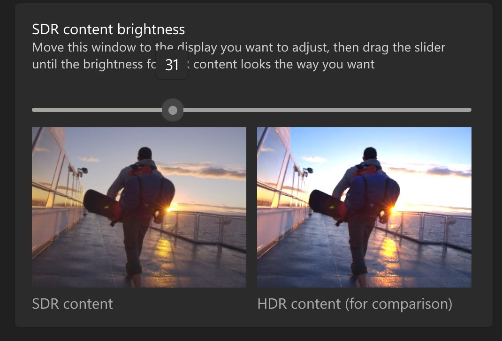

HDR output detected — for accurate brightness set your Windows SDR brightness slider to 31% (203 nits)Settings → System → Display → HDR
No HDR signal detectedBrowser HDR compatibility Chromium-based: Chrome, Edge… Firefox — Enable HDR on Windows and use a compatible browserBrowser HDR compatibility Chromium-based: Chrome, Edge… Firefox.